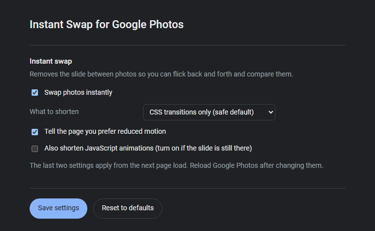

The options page
Four switches.
Nothing else.
Start with the safe default. It only shortens CSS transitions.
Turn the swap off at any moment, without removing the extension.
Two stronger settings, for a slide that survives the safe default.
Your settings follow your Chrome profile. Nothing leaves the browser.
Instant Swap for Google Photos - options
